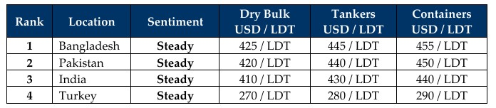

inWeekly Demolition Reports09/03/2026

As the un-announced and Congress unapproved U.S. / Israeli war against Iran enters its second week, the assassination of Ayatollah Ali Khameneiin a join air operation by the nation continues to see earthquakes reverberate across vast regions in the nation that are under control by various Iranian religious groups that served the Ayatollah, are now breaking away at their “free will” into smaller groups controlling massive non-intersecting regions of Iran and retaliating Willy Nilly, with no clear control and / or coordination between the groups, resulting in Iranian President Masoud Pezeshkian apologizing to neighboring Arab nations for the bombings from his country on day and rebel groups bombed DXB Intl Airport and a government high-rise in Kuwait the very next day.
And as the epicenter of chaos remains uncontrolled and uncoordinated (as chaos during war tends to), the world is immediately suffering the economic devastation that generally follows war’s welcome party, with the immediate impacts being felt across the shipping world following the costly closures of the Strait of Hormuz and Houthis declaring war on passing vessels in the Red Sea, all while the Houthis in the South and Hezbollah in the North declare war against Israeli and American forces in the region. This not only saw fuel prices sky-rocketing – but also affected how, when, and where, vessels impacted by the war can freely trade under international laws.
The closure of the Straits of Hormuz, one of the busiest waterways in the world has been the most devastating blow to the world given that not only is it the busiest oil terminal in the world, but most vessels will also now be diverted from the region, likely seeing an increase in tankers at the bidding table. Escalating for those stuck in the region is getting out of it, without getting attacked or captured in the process of doing so. Insurance premiums for vessels stuck there is also rising exponentially, all while Diaper Don brags about sinking the entire Iranian nay, including an Iranian warship that had been notably sunk off of the coast of Sri Lanka by a U.S. submarine, in a conflict that continues to spread its circumference far beyond the epicenter of the Epstein Files, and is potentially endangering the safety of the world in the process.
Oil futures were the most impressive in their ascend as they rocketed past the moon with a 22% climb that saw them shoot from USD 73/barrel at the start of the week to above USD 110/barrel (at the time of writing) as Kuwait announced precautionary cuts to production amidst air strikes to local oil facilities that were mirrored in neighboring Bahrain, all while Iraq saw output plummet by about 70%. The Indirectly affected Baltic Exchange Dry Index declined a sober 6% from the day prior closing. The U.S. Dollar resumed its incessantly volatile rain down on all of the ship recycling nations, while local steel plate prices are literally all over the board and the bidding tables clearly notice a violent dip in tonnage offerings. Donnie’s clearly setting the world on fire as domestic investigations into his past affairs rapidly catch up to him in his old age. What happens next is anyone’s guess.
For Week 10 of 2026, GMS Market Rankings / vessel indications are as below.

📄 Download PDF: Ship-recycling-market-insight-Week-10-03-06-2026-What_Did_Anyone_Expect-1.pdfSource: GMS,Inc.https://www.gmsinc.net/gms_new/index.php/web